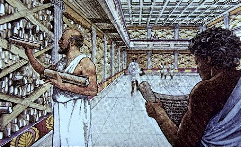

Tentang Kita

Perpustakaan lahir seiring dengan tumbuhnya peradaban manusia, utamanya baca tulis. Kemajuan peradaban manusia, berdampak pula pada perkembangan perpustakaan baik jenis, sistem, kepemilikan ataupun hal-hal lain yang berkaitan dengan penyelenggaraan perpustakaan. Awal berdirinya perpustakaan, dimulai ketika manusia mengenal tulisan, bahan tulisan dan alat tulis. Sehingga tidak berkelebihan, kalau dikatakan bahwa sejarah perpustakaan sama tuanya dengan usia peradaban manusia, semenjak mereka mengenal baca tulis. Berbagai media yang digunakan untuk kegiatan tulis menulis, antara lain : batu, pelepah, tanah liat, parchmen yang terbuat dari kulit domba atau sapi yang dikeringkan. Beberapa parchmen yang disatukan, disebut dengan istilah codex.
Perkembangan perpustakaan di berbagai negara (Suwarno, 2007), antara lain dapat dilacak dari apa yang dilakukan oleh bangsa Sumeria dan Babylonia. Sekitar tahun 3000 SM, bangsa Sumeria telah menyalin rekening, jadwal kegiatan pengetahuan yang dimilikinya, dalam bentuk lempeng tanah liat (clay tablets) dan tulisan yang digunakan berujud gambar (pictograph). Ketika kemudian Sumeria ditaklukan oleh Babylonia, disamping kebudayaannya diserap, maka bentuk tulisannyapun diubah menjadi tulisan paku (cunciform).
Di Mesir, perpustakaan juga mengalami perkembangan yang signifikan. Teks tertulis yang tersimpan di perpustakaan Mesir, diduga ditulis sekitar tahun 4000 SM dengan gaya tulisan yang disebut hieroglyph. Perpustakaan di Mesir semakin berkembang, manakala sekitar tahun 1200 SM diketemukan papyrus,yang dapat digunakan sebagai media untuk tulis menulis. Papyrus dibuat dari sejenis rumput yang dihaluskan dan dikeringkan, dan dari kata itulah kemudian berkembang istilah paper, papiere, papiros, yang berarti kertas (Suwarno, 2007).
Aristoteles ditengarai sebagai orang yang pertama kali mengumpulkan, menyimpan dan memanfaatkan budaya masa lalu di Yunani. Perkembangan perpustakaan di negeri ini, dikenal melalui perpustakaan milik Peistratus (Athena/abad ke 6), Polyerratus (Samos/abad ke 7), dan Pericles, sekitar abad ke 5. Peradaban Yunani mengenal jenis tulisan yang dikenal sebagai mycena (1500 SM), dan kemudian digantikan oleh 22 huruf temuan orang Phoenicia, yang dalam pekembangannya berubah menjadi 26 huruf sebagaimana yang digunakan saat ini.
Perpustakaan juga diketahui berkembang di Romawi, Eropa Barat dan Amerika Utara. Perkembangannya menjadi semakin cepat, sejak ditemukan mesin cetak pada abad pertengahan. Johannes Gutenberg dari Jerman, adalah orang yang memelopori cara penulisan dengan menggunakan mesin cetak, untuk mengganti teknik penulisan yang sebelumnya menggunakan tangan. Sejalan dengan teknologi yang berkembang pada saat itu, produksi buku yang dihasilkan bentuknya masih sangat sederhana. Dengan teknik yang disebut ugari, bentuk buku yang diproduksi menjadi barang langka dan dikenal sebagai incunabula (Sulistyo-Basuki dalam Suwarno, 2007).
Revolusi industri yang terjadi di Eropa, menjadi pemantik berkembangnya perpustakaan. Pesatnya perkembangan teknologi dan sistem yang lebih modern, mempercepat penyebaran perpustakaan ke seluruh penjuru dunia, termasuk Indonesia.
Periodesasi Perkembangan Perpustakaan di Indonesia
a. Era Sebelum Penjajahan
Bangsa Indonesia sejak lama telah mengenal peradaban baca tulis. Prasasti Yupa di Kutai Kalimantan Timur yang diperkirakan berasal dari abad ke V Masehi, merupakan bukti sahih tentang keberadaan peradaban tersebut (Almasyari, 2007).
Pada era kerajaan Hindu-Budha, banyak lahir mahakarya para empu seperti Negarakertagama, Arjunawiwaha, Mahabharata, Ramayana, Sutasoma dll. Karya-karya tersebut merupakan hasil interaksi antara kebudayaan khas Indonesia dengan budaya asing, utamanya India. Pada saat itu kerajaan-kerajaan telah memiliki semacam pustaloka, yakni tempat untuk menyimpan beragam karya sastra ataupun kitab-kitab yang ditulis oleh para pujangga. Hanya saja, pemanfaatan naskah-naskah tersebut bukan untuk konsumsi masyarakat umum, melainkan lebih banyak untuk keperluan raja dan para kerabatnya (Sumiati dan Arief, 2004).
Perkembangan perpustakaan mengalami pasang naik di era kerajaan Islam. Masuknya budaya Arab termasuk baca dan tulis, yang kemudian berinteraksi dengan kebudayaan Melayu semakin memperkaya khasanah budaya Indonesia. Pada masa ini banyak dihasilkan karya-karya besar para pujangga, seperti kitab Bustanus Salatin, Hikayat Raja-Raja Pasai, Babad Tanah Jawi dll. Kitab-kitab tersebut biasanya disimpan di dekat keraton atau masjid, yang menjadi pusat aktivitas kerohanian dan kebudayaan.
b. Era Pemerintahan Hindia- Belanda
Masuknya bangsa Belanda dengan membawa teknologi bidang percetakan, semakin mempercepat perkembangan budaya baca tulis di Indonesia. Di samping mendatangkan mesin cetak, mereka membangun gedung perpustakaan di beberapa daerah. Salah satu yang sampai sekarang masih eksis, adalah Kantoor voor de Volkslektuur yang kemudian berganti nama menjadi Balai Pustaka.
Pada tahun 1778, Bataviaasch Genootschap voor Kunsten en Wetenschappen mendirikan perpustakaan yang mengkhususkan pada bidang kebudayaan dan ilmu pengetahuan, yang kemudian pada tahun 1950 diambil alih oleh Pemerintah Indonesia, dan dinamakan Lembaga Kebudayaan Indonesia. Dalam perkembangannya, pada tahun 1989 organisasi ini melebur menjadi bagian dari Perpustakaan Nasional Indonesia. Perpustakaan lain yang didirikan adalah Bibliotheca Bogoriensis, dengan fokus pada bidang biologi dan pertanian praktis. Perkembangan perpustakaan di beberapa daerah, antara lain dijumpai di Probolinggo (1874), Semarang (1876), Yogyakarta (1878), Surabaya (1879), Bandung dan Salatiga (1891). Pada tahun 1916, perpustakaan-perpustakaan yang ada disatukan menjadi Vereeniging tot bevordering van het bibliotheekwezen, atau perkumpulan untuk memajukan perpustakaan di Hindia Belanda.
Semasa pemerintah Belanda menjalankan politik etis, Commissie voor de Volkslektuur merupakan lembaga yang berperan dalam pemberdayaan perpustakaan. Kegiatan-kegiatan yang dilakukan, antara lain menambah jumlah perpustakaan di desa dan sekolah kelas dua di Jawa dan Madura, melengkapi koleksinya dengan terbitan-terbitan dalam bahasa Jawa, Sunda, Melayu dan Madura. Dalam perkembangannya, hal tersebut kemudian memicu para pengusaha pribumi untuk membentuk lembaga penerbitan, yang dapat memberikan kontribusi terhadap pengembangan perpustakaan di Indonesia (Almasyari, 2007).
c. Era Pemerintahan Jepang
Ketika Jepang menguasai Indonesia, mereka mengeluarkan kebijakan berupa larangan penggunaan buku-buku yang ditulis dalam bahasa Inggris, Belanda dan Perancis di sekolah-sekolah. Akibatnya, banyak buku terutama yang menggunakan bahasa Belanda dimusnahkan. Kondisi ini justru menguntungkan bagi perkembangan perpustakaan di Indonesia, karena dengan kebijakan tersebut buku yang diterbitkan dalam bahasa Indonesia jumlahnya menjadi semakin meningkat. Beberapa surat kabar yang terbit dengan menggunakan bahasa Indonesia pada saat itu, antara lain Suara Asia, Cahaya Asia dll.
d. Era Pemerintahan Republik Indonesia
Setelah Indonesia merdeka, di tengah konsentrasi untuk mempertahankan kemerdekaan dari invasi pasukan Inggris dan Belanda, serta kesibukan menghadapi pemberontakan di beberapa daerah, pada tahun 1948 pemerintah mendirikan Perpustakaan Negara Republik Indonesia di Yogyakarta. Banyaknya permasalahan yang harus dihadapi, mengakibatkan lambatnya perkembangan perpustakaan di Indonesia. Ketika kondisi negara mulai mapan, pada kurun waktu tahun 1950-1960 pemerintah Republik Indonesia mulai mengembangkan perpustakaan melalui pendirian Taman Pustaka Rakyat /TPR (Sumiati dan Arief, 2004). Ada tiga tipe Taman Pustaka Rakyat :
Tipe A untuk pedesaan, dengan komposisi koleksi 40 % bacaan setingkat SD dan 60 % setingkat SMP
Tipe B untuk kabupaten, dengan komposisi koleksi 40 % bacaan setingkat SMP dan 60 % bacaan setingkat SMA
Tipe C untuk provinsi, dengan komposisi koleksi 40 % bacaan setingkat SMA dan 60 % bacaan setingkat Perguruan Tinggi.
Pada tahun 1956, berdasarkan Keputusan Menteri Pendidikan dan Kebudayaan Republik Indonesia No. 29103, Pepustakaan Negara didirikan di beberapa wilayah di Indonesia. Pendirian perpustakaan tersebut dimaksudkan antara lain untuk membantu perkembangan perpustakaan dan menyelenggarakan kerjasama antar perpustakaan yang ada. Perhatian Pemerintah terhadap pengembangan perpustakaan terus meningkat, dan pada tahun 1969 dialokasikan dana untuk mendirikan Perpustakaan Negara di 26 Provinsi. Lembaga tersebut difungsikan sebagai Perpustakaan Wilayah, di bawah binaan Pusat Pembinaan Perpustakaan Departemen Pendidikan dan Kebudayaan.
Berdasarkan Keputusan Menteri Pendidikan dan Kebudayaan Republik Indonesia No. 0164/0/1980, pada tahun 1980 didirikan Perpustakaan Nasional, sebagai Unit Pelaksana Teknis bidang perpustakaan di lingkungan Departemen Pendidikan dan Kebudayaan. Kartosedono (Sumiati dan Arief, 2004) menyatakan bahwa Perpustakaan Nasional merupakan hasil integrasi dari Perpustakaan Sejarah Politik dan Sosial, Bidang Bibliografi dan Deposit Pusat Pembinaan Perpustakaan Departemen Pendidikan dan Kebudayaan, Perpustakaan Museum Nasional dan Perpustakaan Wilayah Daerah Khusus Ibukota Jakarta.
Dalam perkembangannya, melalui Keputusan Presiden Republik Indonesia No.11 Tahun 1989, Perpustakaan Nasional yang kala itu merupakan unit pelaksana teknis di lingkungan Departemen Pendidikan dan Kebudayaan, berubah menjadi Lembaga Pemerintah Non Departemen, yang langsung bertanggungjawab kepada Presiden. Pembentukan organisasi ini merupakan penggabungan antara Perpustakaan Nasional dengan Perpustakaan Wilayah yang ada di 27 provinsi. Pada tahun 1997 berdasarkan Keputusan Presiden Republik Indonesia No. 50, Perpustakaan Nasional diubah namanya menjadi Perpustakaan Nasional Republik Indonesia, yang berlaku sampai dengan saat ini.
Seiring dengan diberlakukannya Otonomi Daerah, berdasarkan Keputusan Presiden Republik Indonesia No. 67 Tahun 2000, Perpustakaan Nasional Provinsi menjadi perangkat daerah, dengan sebutan Perpustakaan Umum Daerah. Mulai saat itu penyelenggaraan perpustakaan diserahkan kepada kebijakan Pemerintah Daerah masing-masing. Kemudian dengan diberlakukannya Undang-Undang Nomor 43 Tahun 2007 tentang Perpustakaan, diharapkan perkembangan perpustakaan di Indonesia menjadi semakin meningkat, karena adanya payung hukum yang kokoh.